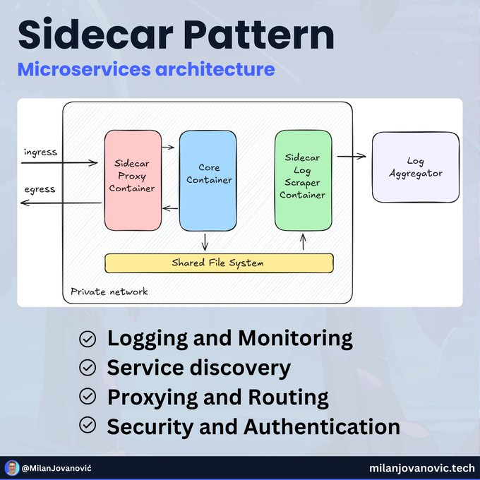

KISS (Keep It Simple, Stupid): Design solutions as simply as possible. Avoid unnecessary complexity.
DRY (Don't Repeat Yourself): Eliminate duplicate code. Centralize logic to make maintenance easier.
YAGNI (You aren't Gonna Need It): Build only what's needed now, not features you might need "someday."
Encapuslate what Varies: Hide changing parts of your code behind stable interfaces.
Program to an Interface, Not an Implementation: Depend on abstractions, not concrete classes, for flexibility.
Favor Composition Over Inheritance: Combine small, reusable components instead of relying heavily on class hierarchies.
Strive for Loosely Coupled Designs: Reduce interdependencies so changes in one part don't break others.
LoD (Law of Demeter): Only communicate with direct neighbors. Don't chain too many calls.
SRP (Single Responsibility Principle): One class, one job—keep responsibilities clear and focused.
OCP (Open/Closed Principle): Open for extension, closed for modification—add new features without changing core code.
LSP (Liskov Substitution Principle): Subclasses should seamlessly replace their parents without issues.
ISP (Interface Segregation Principle): Create small, specific interfaces instead of large, general ones.
DIP (Dependency Inversion Principle): Depend on abstractions, not details—high-level modules shouldn't depend on low-level modules.
Event Sourcing
CQRS
Saga
BFF
API Gateway
Strangler
Database per mictoservice
Externalized configuration
Consumer-Driven contract tracing
Circuit breaker: When a service experiences repeated failures, the circuit breaker 'trips' & stops sending requests to that service for a period
of time. This allows the failing service to recover without being overwhelmed.
Retry: When a request fails, the system automatically retries it a certain number of times before giving up. Improves system availability and can
mask transient errors.
Timeout: Sets a maximum time limit for a request before is considered a failure.
Bulkhead: isolates different parts of an application into pools or compartments. This isolation limits the impact of failures or overload in one
compartment, preventing it from cascading and affecting the entire system.
Rate Limiting: Controls the rate of incoming requests to protect a system from being overwhelmed.
Fallback: Provides an alternative (often less ideal) response or action when the primary one fails.
Hedging (Redundancy): Sends duplicate requests to multiple identical services and uses the fastest response. Mitigates the impact of slow
responses and failures, improving system responsiveness.
Load Shedding: Drops non-critical requests when a system is overloaded to protect its core functionality.
Backpressure: Feedback loop between the producer (sending data) and the consumer (receiving data). The consumer signals its capacity to the
producer, allowing the producer to adjust its output rate dynamically.
: Microservice design pattern that deploys auxiliary components alongside
your main service container.
Key Benefits:
Separation of cross-cutting concerns (logging, monitoring, security)
Language/framework agnostic - can be written in any tech sta
Independent scaling and updates of aux. components
Reduced main service complexity

SideCar principle
: Increase your test code quality.
Fast: Tests should execute quickly to allow frequent execution without slowing down development.
Isolated: Each test should be independent, meaning the result of one test should not affect another.
Repeatable: Tests should produce consistent results regardless of external factors such as time, environment, or network conditions.
Self-Validating: A test should clearly indicate a pass or fail status without requiring manual interpretation.
Thorough/Timely: Tests should cover all edge cases, not just the happy path.